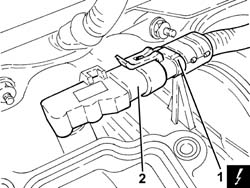

1056B44 AIR PRESSURE SENSOR - R + R
- Path
- Procedures > 10 ENGINE > 1056 PETROL INJECTION SYSTEM > 1056B MULTI-POINT INJECTION SYSTEM (MPI) > 1056B44 AIR PRESSURE SENSOR - R + R
- Kind
- repair procedure (removal / refitting; the operation number is the code)
- Applies to
- engines: 2.2; all production periods
- Interactive page
- https://sloeber94.github.io/elrnDB-fCrm/en/#/194000316
Applies to: engines: 2.2; all production periods
 Removing
Removing
 Refitting
Refitting- Make sure that the ignition key is in the OFF position, then disconnect the battery terminal (-).
Description | Connector | |
|---|---|---|
- | Battery |
Op. 1056B17 THROTTLE BODY INTERGRAL WITH DVL - R R
1. Disconnect the electrical connection from the air pressure sensor.
Description | Connector | |
|---|---|---|
1 | Absolute pressure sensor |
2. Remove the air pressure sensor from the air chamber.

Applies to: engines: 2.2; all production periods
Refitting
Removing- Place the air pressure sensor in its housing on the air chamber.
- Connect the electrical connection to the air pressure sensor.
Op. 1056B17 THROTTLE BODY INTERGRAL WITH DVL - R R
- Connect the negative battery terminal.